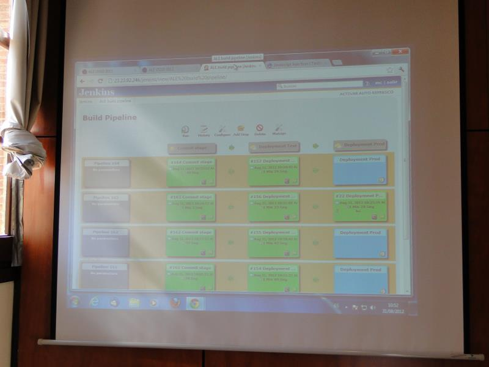

Can we as a (un)conference ship a working product from the first hour to the last hour and that is usable by real users from the very get-go ?
Can we ship working product ?
Can we run our agile practices
to the max ?
Are we really that agile ?
Au départ, quelques règles...
- Itération toutes les heures
- Déploiement en prod toutes les heures
- Toutes les pratiques agiles bienvenues

L'élément clé :
le thème de l'application
Application pour la conférence
Feedback au MAXIMUM !
Contexte technique
- Java - Spring - MySQL
- Git
- Jenkins + plugin
- Heroku
Au final...
- Développement en flux
- Déploiement à chaque livraison de fonctionnalités
- Chaque heure : stand up
En chiffres...
- 160 déploiements en test
- 24 déploiements en production
- 8 committers (dont certains en paires)
- 1649 lignes de code
- 9 fonctionnalités principales
- 18 personnes ont mis des commentaires
Des erreurs commises...
- Application moyennement testée
- Des bugs livrés en prod !
- On a utilisé Java...
Les pratiques agiles utilisées...
- Déploiement continu
- Intégration continue
- Pair Programming
- Standups
- Rétrospectives
- Management visuel
- Planning Game
- Demo
- Feedback fréquent
- Client sur site
- Adaptation permanente aux besoins
- Walking Skeleton
- YAGNI
- KISS
- Célébration
- (trop) peu de TDD
Les pratiques oubliées en route...
- TDD - BDD - ATDD
- Tests unitaires
- Refactoring
- Design Simple
- Limites de WIP
- Revue de code
- Métaphores
Même si elle reste capable d'erreurs, une équipe de personnes passionnées par l'Agile est capable d'apprendre très vite
On obtient pas de feedback riche tant qu'on n'a pas mis en production
On n'imagine pas le plaisir qu'il y a à mettre en prod fréquemment
La pression du résultat peut pousser à oublier certains principes
Shipping is not the purpose.
Learning is.